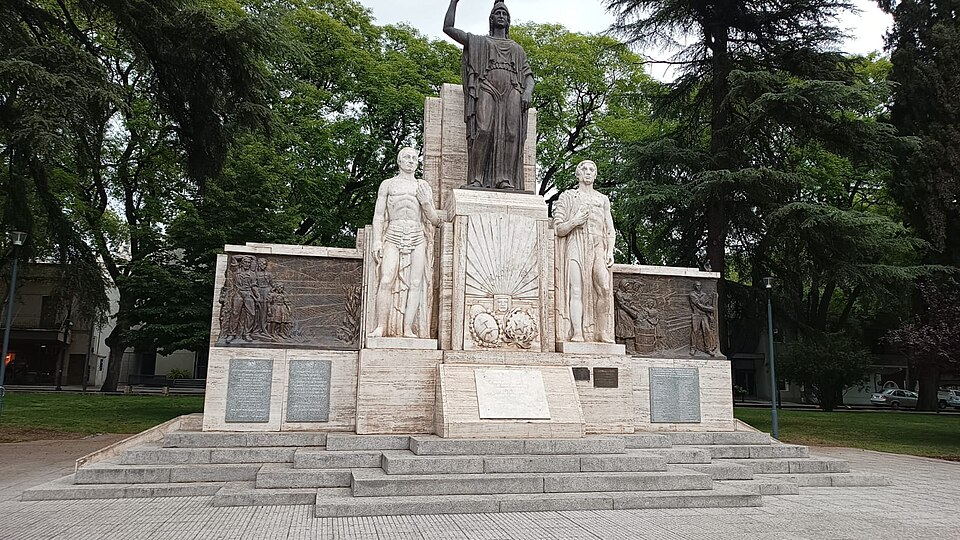

Encuesta vecinal abierta: 5 preguntas
PartidoJusticialistaCapital · Mendoza
Dejá tus datos para sumarte, consultá el padrón oficial y seguí el trabajo del partido en las 12 secciones de la Ciudad de Mendoza.
Noticias del PJ Capital. Lo nuevo en el partido y en el sitio.

Abre la preafiliación online
Cualquier vecino de la Capital puede dejar sus datos desde el celular y el partido lo contacta para afiliarse.

Lanzamos la encuesta vecinal por sección
Cinco preguntas para saber qué preocupa en cada barrio: inseguridad, sueldos, salud, la justicia y más.
Reunimos los teléfonos útiles de la Capital
Emergencias, la Línea 144, ANSES, PAMI y salud en un solo lugar, para llamar con un toque.
Padrón: consultas oficiales
Este sitio no guarda datos del padrón. Para saber dónde votás o si figurás como afiliado/a, usá las consultas oficiales.
-
¿Dónde voto?
Tu escuela y mesa para votar, según el padrón electoral oficial.
Consultar dónde voto -
¿Estoy afiliado/a?
Si figurás en el registro oficial de afiliados a partidos políticos.
Consultar mi afiliación
PENDIENTE: enlaces oficiales de consulta.

Habitantes de las 12 secciones
Tocá una sección del mapa o de la lista para ver cuántos vecinos viven en ella.
Total de la Capital
—
Las tres banderas
Justicia social, independencia económica y soberanía política: las tres banderas del peronismo guían el trabajo del partido en cada sección de la Capital.
Encuesta vecinal. Qué le preocupa a la Capital.
Lo que más preocupa
Porcentaje de vecinos que eligió cada tema; cada uno elige hasta 3.
Teléfonos útiles de la Capital. Tocá el número para llamar.
La preafiliación en tres pasos
-
Tus datos: nombre, apellido y DNI
Los mismos que figuran en tu documento, más un teléfono para que te llamemos.

-
Tu sección de la Capital
Elegís en cuál de las 12 secciones de la Ciudad de Mendoza vivís.
-
Tu consentimiento y el contacto
Aceptás el uso de tus datos y el partido se comunica con vos para completar la afiliación oficial.

Preafiliación al PJ Capital
Dejá tus datos y el partido se va a comunicar con vos para completar la afiliación oficial.
Qué es la preafiliación
Es un primer contacto, no la afiliación oficial. Con este formulario no quedás afiliado/a: el partido te llama o te escribe para hacer el trámite formal.
Usamos tus datos solo para contactarte por la afiliación.
Comisión partidaria
Presidente
Fernando Ortiz